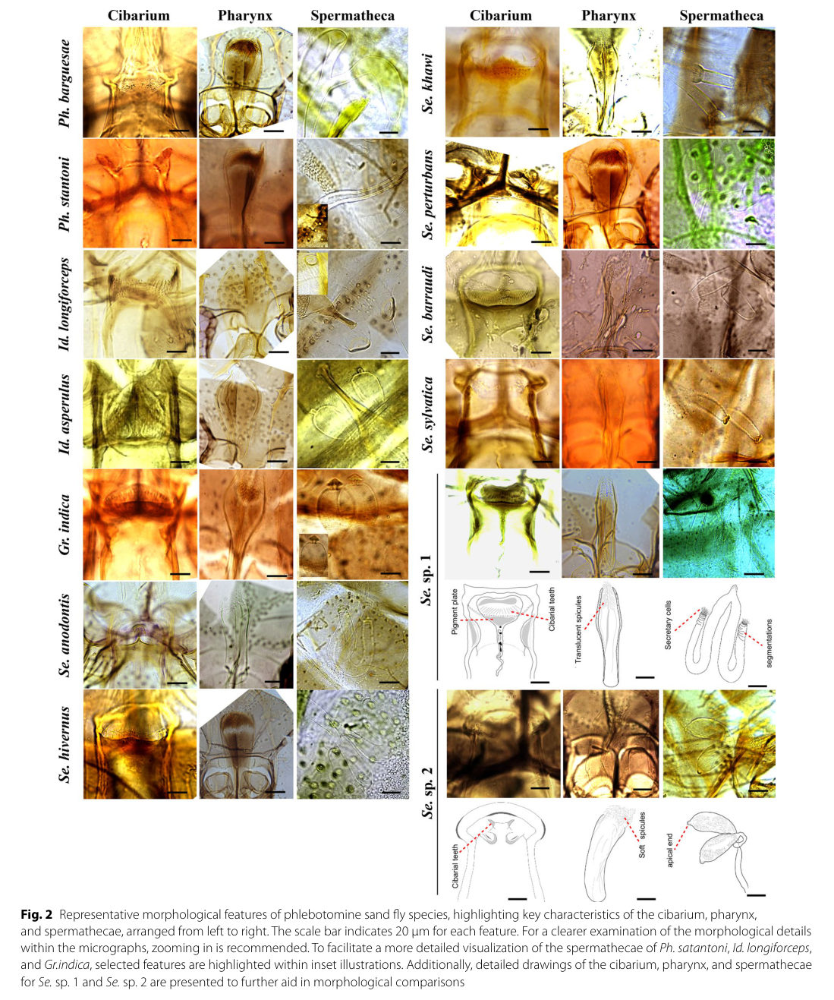

Species › Idiophlebotomus
Idiophlebotomus longiforceps
| Classification | Genus Idiophlebotomus |
|---|---|
| Status | valid |
| Distribution | Caves in southern China, Thailand and Vietnam | Records in the project regions: China, Laos, Thailand, Vietnam (Galati et al. 2025) | Laos, first record (Vongphayloth et al. 2024) | Laos: Luangnamtha, Luangphabang, Vientiane province (karstic areas) (Vongphayloth et al. 2026, Table 2) |
| Thailand | Pha Tong cave, Chiang Rai (Renaux Torres et al. 2023) | Thailand (Galati et al. 2025) | Sakon Nakhon (2 females) (Polseela et al. 2024); Kanchanaburi (Taklor Cave) (Soomro et al. 2025); listed in the 42-species Thai checklist (Soe et al. 2026, Table 3) |
| Importance | Unknown Trypanosoma DNA detected in 2 specimens from Laos (2/25 = 8% for the genus; Vongphayloth et al. 2026). |
| Diagnostic notes | Strictly cavernicolous. ♀ cibarium with more than 60 small triangular teeth, no pigment patch; pharynx with many wedge-shaped teeth. ♂ style with three spines (Lewis 1982). | Galati et al. 2025 (pp. 37-38): described with limited details from China; its records in Southeast Asia may not be valid. | Laos ♂: slender, rounded aedeagus; three gonostyle spines (one apical, one at 2/3 of the gonostyle, one near the latter) (Vongphayloth et al. 2024). |
| Sources | Lewis 1982, Renaux Torres et al. 2023, Galati et al. 2025, Polseela et al. 2024, Soomro et al. 2025, Soe et al. 2026, Vongphayloth et al. 2024, Vongphayloth et al. 2026 |
How it keys out
The chain of characters leading to this taxon in each key (a ready-made diagnosis).
Idiophlebotomus species (Lewis 1982) – couplet F7a
Idiophlebotomus species (Lewis 1982) – couplet M3b
Laos karst (Vientiane): females (Vongphayloth et al. 2024) – couplet 2b
Laos karst (Vientiane): males (Vongphayloth et al. 2024) – couplet 2b
Figures

